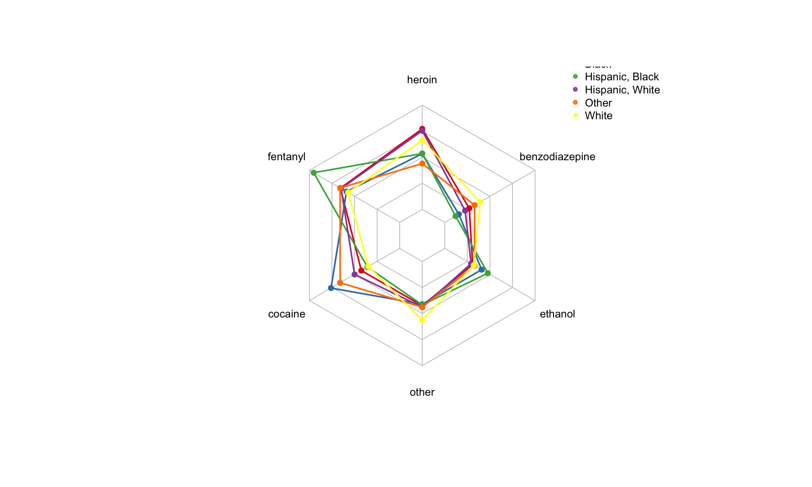

Background
The rate of drug-related deaths in Connecticut is currently higher than the national average and has continued to steadily increase. While there have been a significant number of initiatives implemented to reduce drug misuse in recent years, it is important to understand the demographic and geographic attributes underlying this public health issue to effectively reduce drug-related deaths in vulnerable populations.
Initial Questions
- What are the demographic characteristics of individuals who experienced a drug-related death in Connecticut?
- Where are these deaths mainly occurring within the state?
- Are there seasonal variations in deaths across each year?
- What specific drug types have been attributed to the increase in drug-related deaths?
Data
To address our initial research questions, we were interested in specific variables within the Accidental Drug Related Deaths dataset after tidying and cleaning. Variables used included attributes and characteristics of individuals at the time of death, details of the location of death, and type of drug used before death.
Below is a list of variables used in alphabetical order:
age: Age of individual at death
death_city_long and death_city_lat: Location of death by longitude and latitude
drug: Type of drug which includes heroin, fentanyl, cocaine, ethanol, benzodiazepine, and other
location: Location of death categorized by location type including nursing home, hospice, or convalescent home and residence, and hospital, and others.
month and year: Details of the date of death
race: Race of individual which include White, Black, Hispanic White, Asian, Hispanic Black, and other
sex: Sex of individual which include male, female, or unknown
Exploratory Analysis and Findings
Temporal analysis of deaths from 2012-2018
- Chart A shows that there is a growing number of Drug-Related Death in Connecticut from 2012 - 2018.
- Specifically, among all races, the white has the most progressive growth of Drug-Related Death (in exponential trend), compared to other races.
- Interestingly, there is an obvious drop of drug-related death in Connecticut in 2017 among all race groups and a rebound of drug-related death after 2018 in all race groups, except white.
Distribution of death by race, gender, age
- Chart B shows the distribution of age in drug-related deaths. From the graph, we can see that most of the drug-related deaths happen at the age between 25 and 50.
- Chart C shows the sex distribution in drug-related deaths. From the graph, we can see that males always outnumber females in the number of deaths across all race groups.
- Chart C also shows that there exists a distinct variation in drug-related deaths across gender specifically among white.
Age of death attributed to each drug type
- Chart D shows the distribution of age of death by different drug types. From the chart, we can see that:
- Fentanyl and Heroin are frequently used by younger age group (below 25 years old)
- Cocaine and Ethanol are widely used by older age group (40 to 45 years old)
- There is a wide age variation in Benzodiazepine-related death.
Location of death across Connecticut
Spider-plot

- The spider plot above shows the different components of drug use in different race groups. We can see:
- Hispanic-Black has a higher proportion of Fentanyl-related death, as compared to other race groups.
- Both Asian and Hispanic-White have a high proportion of Heroin-related death, as compared to other race groups.
- Black and Other race groups have a high proportion of Cocaine-related death, as compared to other race groups.
- White has a high proportion of Heroin-related and Other-drug-related death, as compared to other race groups.
Discussion
- The possible reason for the decline in drug-related death in Connecticut in all race group at 2017 and the rebound in drug-related death in all race group, except White, after 2018;
- The contributors to the different usage pattern (the type of drug, the age of drug-related death) in different race group;
- Suggestions for modes of intervention, how findings could impact the understanding of drug-overdose deaths;
- Limitations included: not knowing what ‘other’ drugs included which could impact analysis.